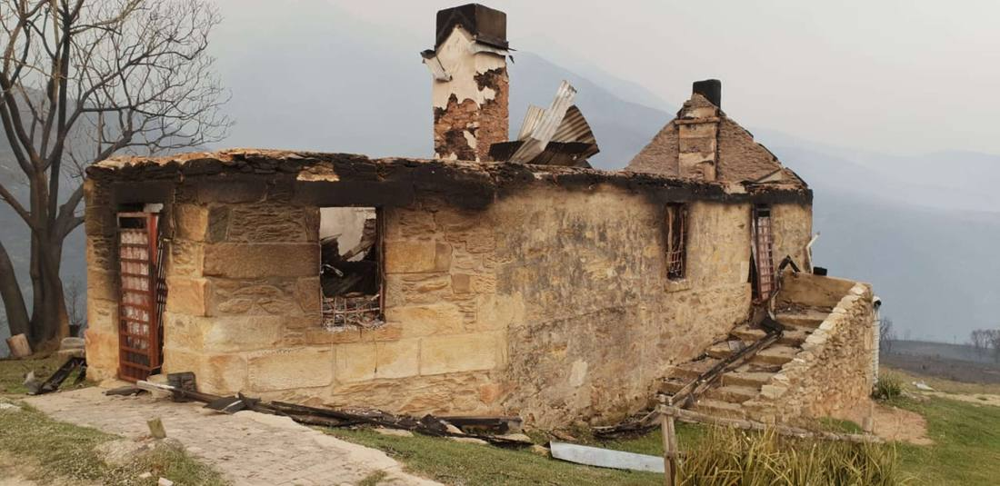
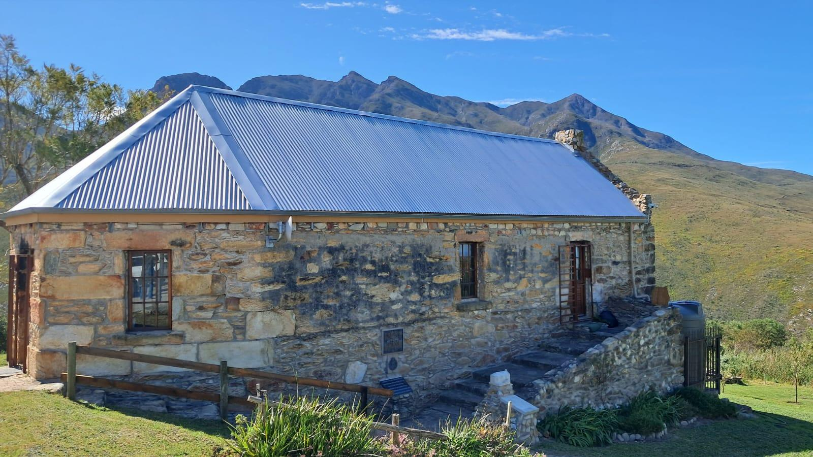
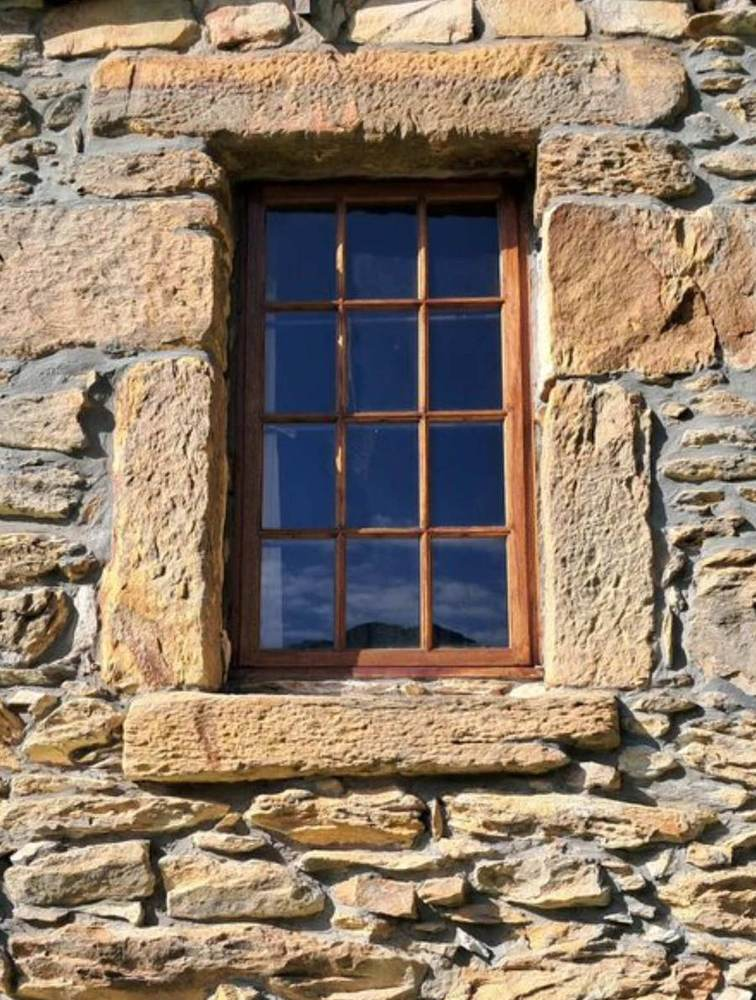
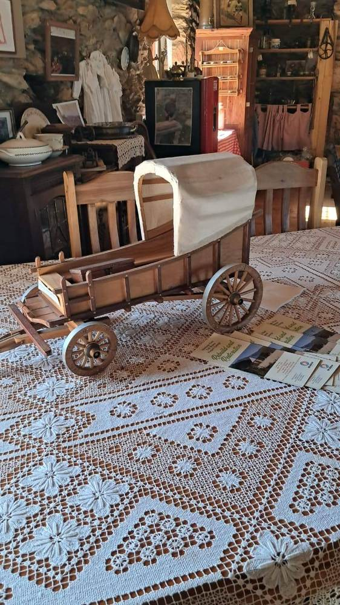

Fire took its roof — twice. Neglect nearly took the rest. What's left is a hundred and eighty years of history, held up by a handful of volunteers who refuse to let it fall. This is where you come in.
Every restoration has a before and an after. Here's ours — so far.

Fire took the roof once, then took it again. Thieves stripped the yellowwood beams, the doors, the Oregon pine floors. For a while, it looked like the mountain would simply take the building back.

It didn't fall. Volunteers rebuilt it by hand — roof, floors, walls — and reopened the doors. Today it's a living museum, a coffee stop, a reason to pull over on the way up the Pass.
There's more of this story left to write. Keep scrolling.

"A pass without its toll house is just a road."FRIENDS OF THE OLD TOLL HOUSE
What a fantastic find. Just off a 200m dirt road at the bottom of the Outeniqua Pass. The very best pancakes and coffee and an interesting museum within the Toll House. Great views and a perfect place to relax.— PAUL
What a sensational place! A good overview of history and breathtaking scenery of the surrounding mountains, and of course, to round off your visit, a delicious pancake followed by coffee is a must!— CHARVET
Think of this as the account book, laid open. Every line is real work waiting for real hands. The final say on how it's spent always stays with the Friends — Signatura just makes the introductions, and helps say thank you properly.
| Priority | Indicative band | What it covers |
|---|---|---|
| Immediate fabric | R25,000 – R80,000 | Roof, joinery, security, damp-proofing, rewiring, fire readiness. |
| Museum & trail | R15,000 – R50,000 | Display cases, trail markers, printed history, somewhere to sit. |
| Hospitality kit | R10,000 – R35,000 | Kitchen equipment, furniture, umbrellas, signage. |
| Camping / ox-wagon | R80,000 – R250,000+ | Site works, services, real ox-wagon units — a future income line. |
| Operating reserve | R30,000 – R100,000 | Rates, insurance, fuel, a cushion for the flooded-pass season. |
| Skills in kind | Value as given | Masons, carpenters, electricians, accountants, designers, security. |
Every pledge here has a name attached and a job it pays for — a roof that stops leaking, a gate that keeps thieves out, a season the doors stay open. This is giving you can drive past and point to.
A yearly pledge, R5,000–R50,000, with your name on a board at the house.
Stone, lime, timber, ironmongery, paint, solar, fencing — against a real list.
One day from a contractor already working in George. Billed or donated.
Bring your team for an outing. Your spend becomes their operating income.
Walk a client or investor up the Pass. Heritage is half of why people stay.
Put your name on a bench here and it outlasts you by a century, easily; the stone isn't going anywhere. A small monthly gift adds up more, over the years, than one generous cheque that never comes again.
Once-off or monthly. Keeps the coffee shift running.
Your name on the thank-you list; invited to a walkabout.
Real recognition — dedicate a bench, tool, or trail marker.
A real conversation about backing one project, start to finish.
Canvas tents under the Outeniqua stars. An ox-wagon creaking on its wheels for the first time in a hundred years. Lantern light along a trail that used to just be dirt. None of it exists yet — not the camping ground, not the ox-wagon stay. All of it is possible, with the right hands and the right support.
This is the part of the story that hasn't been written. You could be one of the people who writes it.

A hand-built preview already sits in the museum — proof this isn't just a dream.Read this, then go and see it — oldtollhouse.co.za, or drive the Pass yourself on a Saturday or Sunday.
Decide what you can offer: cash, a monthly gift, materials, a trade day, or an introduction.
Signatura connects you straight to the Friends — ask for Gerda Stols — so your gift reaches the people doing the work.
Confirm banking details directly with the Friends before you pay anything. Treat anything else as out of date.
A plain word on all of this: nothing here is a formal prospectus, a share offer, or a promise that your money comes back to you. What "investing in a landmark" means, in this case, is exactly what it sounds like — giving money, materials or time so a public building stays standing. You don't end up owning any part of it, and that's the point.
The Rand figures above are a starting point for conversation, not an audited budget. Before you pay anything, confirm the current banking details, the NPO number, and the tax status directly with the Friends of the Old Toll House.